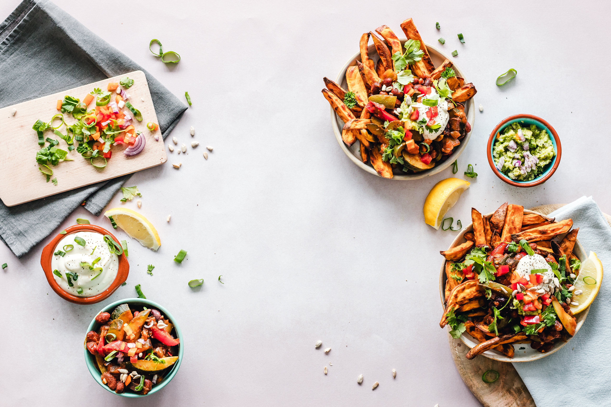

Tech
Unlocking Innovation: Navigating the Dynamic Landscape of Software Development
14 Nov, 2023
In today's fast-paced digital age, software development stands as the cornerstone of...
innovation, driving transformative change across industries. "Unlocking Innovation: Navigating the Dynamic Landscape of Software Development" explores the pivotal role software development plays in shaping our technological future.
As businesses strive to stay ahead in an increasingly competitive market, embracing innovation becomes imperative. Software development serves as the conduit through which organizations can unlock new possibilities, streamline processes, and deliver value to their customers.
However, navigating the dynamic landscape of software development poses its own set of challenges. From rapidly evolving technologies to changing consumer demands, staying agile and adaptable is essential. This note delves into the strategies and best practices necessary for success in this ever-evolving field.
Through continuous learning, collaboration, and a forward-thinking mindset, we can harness the power of software development to drive innovation, propel growth, and create a brighter, more connected future for all.
 Otingbemiga
Otingbemiga
Food
"Craving Comfort: Indulge in the Timeless Pleasures of Pizza and Burgers"
14 Nov, 2023
invites us to embrace the simple joy and satisfaction found in two beloved culinary...
classics. Pizza and burgers, with their comforting flavors and familiar appeal, have long held a special place in our hearts and palates.
This short note celebrates the universal allure of these timeless favorites, reminding us of the sheer pleasure derived from biting into a gooey slice of pizza or sinking our teeth into a juicy burger. Whether enjoyed as a solo indulgence or shared with friends and family, pizza and burgers have an innate ability to evoke feelings of warmth, contentment, and nostalgia.
Amidst life's hustle and bustle, there's solace to be found in the familiar embrace of these culinary delights. From the gooey cheese and tangy tomato sauce of pizza to the succulent patty and fresh toppings of a burger, each bite is a comforting reminder of life's simple pleasures.
So, the next time you find yourself craving comfort, why not indulge in the timeless pleasures of pizza and burgers? After all, nothing quite compares to the satisfaction of sinking your teeth into a classic slice or burger, bringing a moment of blissful contentment to your day.
Otingbemiga
Sport
"Game Changers: Breaking News and Highlights from the Sporting World"
02 Dec, 2023
is your go-to source for the latest updates, scores, and stories from the realm...
of sports. From thrilling victories to unexpected upsets, this platform delivers real-time coverage of the most exciting events and developments across various sporting disciplines.
Whether you're a die-hard fan or a casual observer, "Game Changers" keeps you informed and engaged with comprehensive news articles, insightful analyses, and captivating highlights. Stay ahead of the game with exclusive interviews, behind-the-scenes footage, and expert commentary, providing you with a deeper understanding of the sports you love.
Join us as we celebrate the athletes, teams, and moments that redefine the boundaries of possibility and inspire audiences around the globe. From the adrenaline rush of the stadium to the comfort of your screen, "Game Changers" brings the exhilarating world of sports directly to your fingertips.
Otingbemiga

Sport
"Injury Woes: Key Players Sidelined Ahead of Crucial Matches"
16 Jan, 2023
sheds light on the challenges faced by top football clubs as they navigate through...
critical stages of prestigious tournaments. With the stakes at an all-time high, the absence of key players due to injuries adds an extra layer of complexity to the game.
As teams gear up for pivotal clashes in tournaments like the Champions League and UEFA European Cup, the sidelining of star athletes due to injuries poses significant setbacks. These players often play pivotal roles in their team's strategies and contribute significantly to their success on the field.
The short note highlights the impact of these injuries on team dynamics, tactics, and overall performance. It emphasizes the importance of depth in squad depth, resilience, and adaptability in overcoming such challenges and striving for victory amidst adversity.
Despite the setbacks, football remains unpredictable, and the absence of key players opens doors for emerging talent to shine and unexpected heroes to emerge. As the drama unfolds on the pitch, fans brace themselves for thrilling encounters and unforgettable moments in the quest for glory in elite football competitions.
Otingbemiga

Sport
Reds' Redemption: Liverpool FC's Remarkable Journey Back to the Top
13 Dec, 2023
chronicles the resilience and determination of Liverpool FC following...
their setback against Arsenal on February 4th, 2024. Despite the defeat, Liverpool FC remains a powerhouse in English football, with a storied history of overcoming adversity.
The note highlights Liverpool FC's unwavering spirit and commitment to excellence as they strive to reclaim their position at the pinnacle of the sport. Led by their esteemed manager and bolstered by a talented squad, the Reds embark on a journey marked by perseverance and grit.
As Liverpool FC navigates through challenges and setbacks, they draw inspiration from their rich legacy and passionate fanbase. With each match, the team demonstrates their resolve to bounce back stronger, fueling hopes of future triumphs and continued success.
"Reds' Redemption" serves as a testament to Liverpool FC's enduring legacy and their steadfast pursuit of greatness, embodying the spirit of resilience and determination that defines the club's identity.
Otingbemiga

Tech
Connecting in the Cloud: The Intersection of Tech and Networking
24 Nov, 2023
explores the symbiotic relationship between technology and networking in th...
e digital era. As the world increasingly relies on cloud computing for storage, processing, and communication, this note delves into how networking infrastructure plays a vital role in enabling seamless connectivity.
In this digital landscape, the cloud serves as the backbone of modern technological advancements, offering scalability, flexibility, and accessibility. Whether it's sharing data across global networks or deploying software applications effortlessly, the cloud empowers businesses and individuals to collaborate and innovate like never before.
However, the effectiveness of cloud technology hinges on robust networking infrastructure. From high-speed internet connections to secure VPNs, networking ensures that data flows smoothly between users, devices, and cloud servers. By optimizing network performance and reliability, organizations can maximize the benefits of cloud computing while minimizing downtime and latency.
"Connecting in the Cloud" underscores the importance of synergy between technology and networking in driving digital transformation. Through strategic investments in both areas, businesses can stay agile, competitive, and well-positioned to thrive in the ever-evolving digital landscape.
Janet

News
Trump 2024: The Battle for the Presidency Heats Up with Trump's Re-Election Bid
04 Jan, 2024
"Trump 2024: The Battle for the Presidency Heats Up with Trump's Re-Election Bid"...
signifies the resurgence of political fervor as former President Donald Trump announces his bid for re-election. As the political landscape braces for another round of polarization and contention, Trump's candidacy injects new energy into the race for the White House.
The note encapsulates the anticipation and speculation surrounding Trump's return to the campaign trail, igniting debates on both sides of the aisle. Supporters hail his leadership and policies, while opponents scrutinize his controversial tenure and divisive rhetoric.
With the stakes higher than ever, the 2024 presidential race promises to be a battleground of ideologies, visions, and values. As Trump vies for another term in office, the nation braces for a tumultuous journey ahead, with the outcome poised to shape the trajectory of American politics for years to come.
"Trump 2024: The Battle for the Presidency Heats Up with Trump's Re-Election Bid" encapsulates the intensity and drama of a political showdown poised to define a nation's future.
Otingbemiga

News
Rising Prices, Shrinking Pockets: The Harsh Reality of Nigeria's High Cost of Living
02 Feb, 2023
sheds light on the pressing issue facing many Nigerians as they grapple with...
the increasing burden of living expenses. In recent times, the cost of essential goods and services has surged, putting a strain on household budgets and diminishing purchasing power.
The note captures the stark contrast between rising prices and stagnant incomes, highlighting the challenges ordinary citizens face in making ends meet. With salaries failing to keep pace with inflation, many find themselves struggling to afford basic necessities, including food, housing, and healthcare.
As frustrations mount and economic pressures escalate, the specter of social unrest looms large. The disparity between the soaring cost of living and the limited means of survival creates a breeding ground for discontent, sparking potential protests and demonstrations across the country.
In this climate of economic hardship, there is a growing sense of urgency for government intervention and policy reforms to address the root causes of Nigeria's affordability crisis. Failure to take decisive action risks further exacerbating social tensions and deepening the divide between the haves and the have-nots.
"Rising Prices, Shrinking Pockets" serves as a poignant reminder of the human toll inflicted by Nigeria's high cost of living, underscoring the urgent need for equitable solutions that prioritize the welfare of all citizens and safeguard the nation's social fabric.
Otingbemiga
News
"Naira's Fate: The Story of Dollar Exchange Rates in 2024"
07 Feb, 2024
encapsulates the economic narrative of Nigeria's currency amidst the fluctuations...
in the exchange rate against the US dollar throughout the year. As the primary measure of the nation's economic stability, the exchange rate serves as a barometer of fiscal health and investor confidence.
The note delves into the various factors influencing the trajectory of the Naira against the Dollar, including global economic trends, domestic policy decisions, and market dynamics. From periods of appreciation to moments of depreciation, the Naira's journey against the Dollar reflects the intricacies of Nigeria's economic landscape.
Throughout 2024, stakeholders closely monitor exchange rate movements, seeking insights into the country's economic resilience and vulnerabilities. The story of the Naira's fate against the Dollar serves as a poignant reminder of the challenges and opportunities inherent in managing a nation's currency in a globalized world.
As policymakers, businesses, and citizens navigate the uncertainties of exchange rate fluctuations, the narrative of "Naira's Fate" underscores the importance of prudent fiscal management, sustainable economic policies, and proactive measures to safeguard financial stability and promote growth.
Otingbemiga

Tech
Cracking the Code: Unleashing the Power of Programming
18 Nov, 2023
delves into the transformative potential of programming in our rapidly evolving...
digital landscape. From powering everyday conveniences to driving groundbreaking innovations, programming is the backbone of modern technology.
This short note explores the significance of mastering programming languages, not just as a technical skill, but as a gateway to unlocking endless possibilities. Whether it's building software applications, designing websites, or analyzing data, programming empowers individuals to turn ideas into reality.
Through this exploration, we uncover how programming enables problem-solving, fosters creativity, and revolutionizes industries. From novice coders to seasoned developers, "Cracking the Code" celebrates the ingenuity and impact of programming in shaping our connected world.
Otingbemiga

Food
Taste the World: Exploring Exotic Delights of Continental Fare
14 Nov, 2023
beckons us on a culinary adventure that transcends borders and tantalizes the...
taste buds with a diverse array of flavors and cuisines. This short note encapsulates the essence of indulging in continental cuisine—a journey that promises to delight, surprise, and awaken the senses.
From the aromatic spices of Indian curries to the savory delights of French pastries, continental fare offers a rich tapestry of culinary experiences that reflect the cultural diversity and gastronomic heritage of nations around the globe. Each dish is a testament to centuries of tradition, innovation, and craftsmanship, inviting us to savor the complexities of flavor and texture that define continental dining.
As we embark on this gastronomic journey, we immerse ourselves in the sights, sounds, and aromas of far-off lands, expanding our palates and broadening our culinary horizons with each delectable bite. Whether it's a hearty Italian pasta, a fragrant Thai curry, or a delicate Japanese sushi roll, continental fare invites us to embrace the spirit of exploration and celebrate the universal language of food.
"Taste the World" is not just a meal—it's an experience that transcends borders, fosters cultural appreciation, and connects us to the global community through the universal pleasure of sharing a delicious meal together. So, let's embark on this epicurean adventure and savor the exotic delights that await us in every corner of the world.
Otingbemiga
Food
From Farm to Fork: Rediscovering the Joy of Wholesome Vegetables
28 Jan, 2024
encapsulates the journey of reconnecting with the essence of fresh produce and th...
e profound impact it has on our well-being. In today's fast-paced world, it's easy to lose sight of the simple pleasures found in the nourishment of nature's bounty.
This short note celebrates the beauty of the farm-to-table movement, highlighting the journey of vegetables from the soil to our plates. With each bite, we rediscover the vibrant flavors, textures, and nutrients that only wholesome vegetables can provide.
Embracing this journey offers more than just sustenance—it provides a deeper connection to the land, a sense of gratitude for the farmers who cultivate our food, and a renewed appreciation for the intricate ecosystems that sustain us.
"From Farm to Fork" invites us to savor the joy of wholesome vegetables, not just as a meal, but as a celebration of nature's abundance and a testament to the power of mindful eating. Let's embark on this journey together and rediscover the profound joy that comes from nourishing our bodies and souls with the goodness of fresh produce.
Otingbemiga